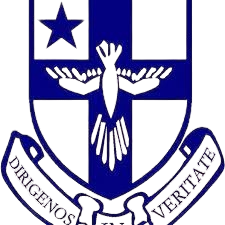
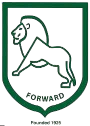
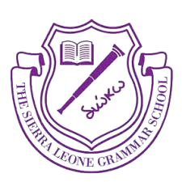
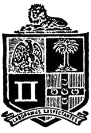
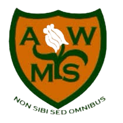
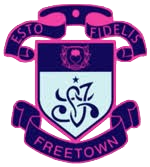
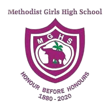
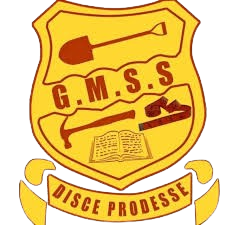
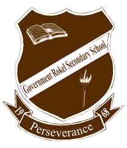

Schools in Sierra Leone

Albert Academy
The Albert Academy is a secondary school in Freetown, Sierra Leone. The school's motto is Esse Quam Vederi. It is situated at Berry Street in Freetown.

St Edward's
St Edward's Secondary School is a public Catholic secondary school in Freetown, Sierra Leone. While St. Edwards is designed to be an all-male school, female students are permitted to enroll as A Level candidates.

Prince of Wales
Prince of Wales School is an all-boys secondary school in Freetown, Sierra Leone . The school was established on April 6, 1925, with an emphasis on fostering science education and modern languages studies.

Sierra Leone Grammar School
The Sierra Leone Grammar School was founded on 25 March 1845 in Freetown, Sierra Leone, by the Church Mission Society (CMS), and at first was called the CMS Grammar School.

Methodist Boys' High School
The Methodist Boys' High School, was founded as the Wesleyan Boys' High School, is a secondary school founded in Freetown, Sierra Leone, by the May family under the auspices of the Wesleyan Society on 6 April 1874.

Annie Walsh Memorial
Welcome to the Annie Walsh Memorial School, the first girls’ Secondary School in West Africa, proudly educating and empowering girls since 1849.

St. Joseph's Secondary School
St. Joseph's Secondary School, also known as Saint Joseph's Convent School or as Convent School, is a Catholic secondary school in Freetown, Sierra Leone, established in 1868.

Methodist Girls' High School
The Methodist Girls' High School founded as the Wesleyan Girls' High School is a secondary school for girls established by James Taylor, an uncle of Samuel Coleridge-Taylor under the auspices of the Wesleyan Society on 1 January 1880.

Government model senior secondary school
Government Model Senior Secondary School is a prominent, co-educational public secondary school located on Berry Street in Freetown, Sierra Leone.Founded in September 1972.

Government Rokel Secondary School
Government Rokel Senior Secondary School is a prominent, public secondary school located at Tower Hill in Freetown, Sierra Leone, situated adjacent to the country's national parliament building. Established on October 3, 1968.